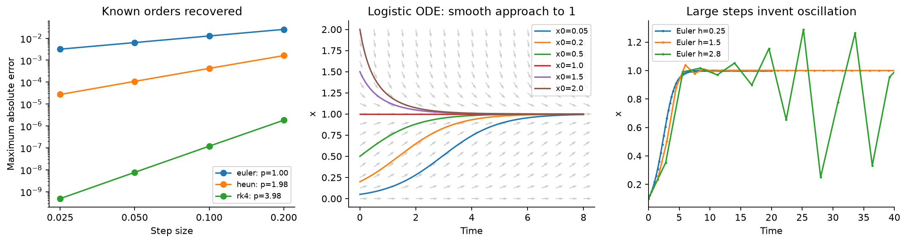
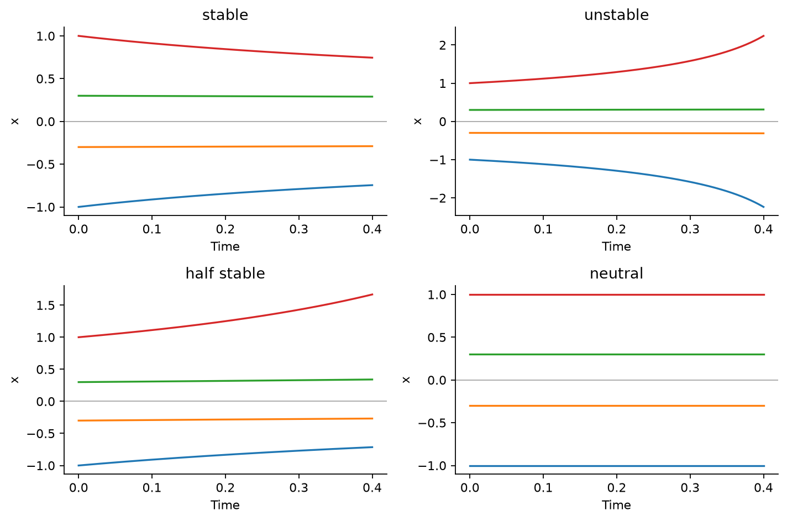
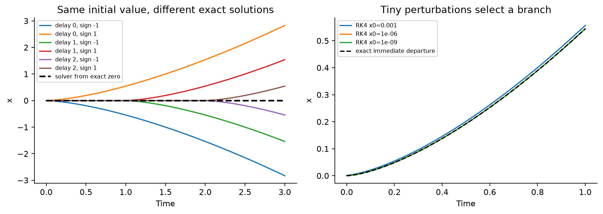
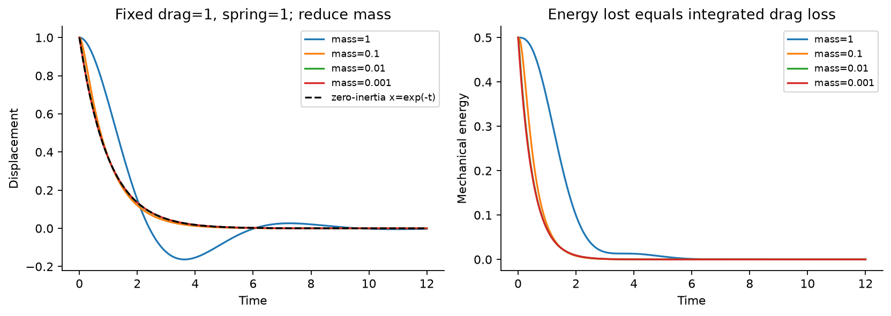
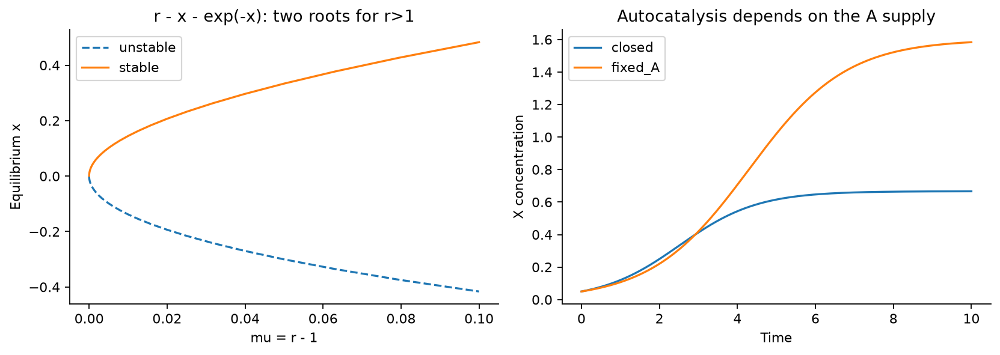
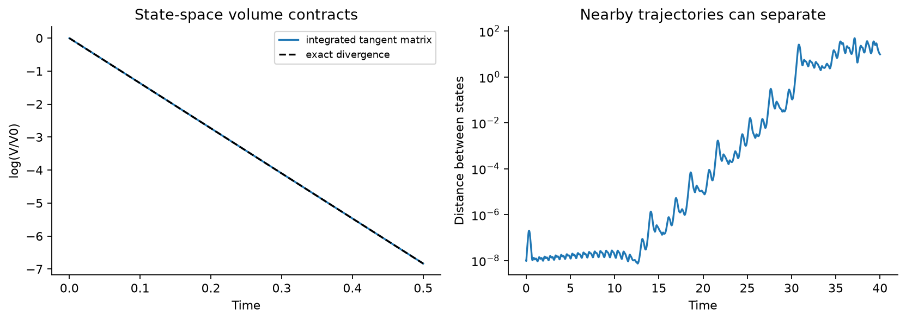
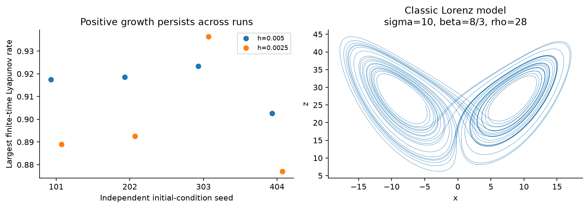
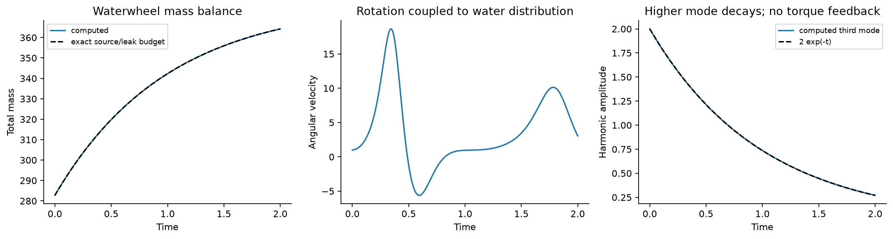

Stability, numerical accuracy
and the Lorenz waterwheel
The supplied examples pass analytic and independent numerical checks. They also show why solver artifacts, nonuniqueness and chaotic sensitivity must be distinguished.
All results below are mathematical computations. No laboratory or biological tests were performed. Full assumptions and equations: research README.
Expanded stress results are available
The next pass took 8.50 minutes: 24 long Lorenz runs, 120 parameter-scan trajectories, tougher spatial resolution checks and separate amplitude/phase accuracy rules.
39/39 declared stress checks passed. The oscillation study additionally evaluates 144 method/step/duration combinations and explicitly rejects stable-but-inaccurate settings.
Open the expanded illustrated report · Stress methods and reproduction
What the tests establish
| Test | Measured result | Meaning |
|---|---|---|
| Logistic, h=0.025 | Euler error 3.20e−3; Heun 2.74e−5; RK4 4.81e−10 | Expected error orders recovered against an exact solution over t=0…4. |
| Coarse Euler, h=2.8 | 25 equilibrium crossings in the final 30 samples | The method introduced oscillation absent from the positive continuous logistic solution. |
| Overdamped limit | Error falls 0.07093 → 0.009313 → 0.0009831 | Reducing mass 0.1 → 0.01 → 0.001 improves the approximation at fixed drag and spring constant. |
| Cube-root equation | 7 branches; maximum residual 2.22e-16 | Different exact solutions have the same initial value. A zero solver result does not imply uniqueness. |
| Lorenz Hopf threshold | 24.7368421053 | A local eigenvalue crossing was verified; global bifurcations were not computed. |
| Lorenz volume contraction | Rate −13.66667; log-volume error 6.57e-11 | Contraction of state-space volume coexists with a positive largest growth rate. |
| Waterwheel → Lorenz | β=1; projection error 4.43e-09 | The idealized first-mode reduction differs from the classic β=8/3 Lorenz example. |
Check the method before interpreting the motion

Four kinds of equilibrium behavior

One initial value can have many solutions here

Neglecting inertia becomes a better approximation

Equilibria depend on parameters and assumptions

Shrinking state volume and growing separation coexist

Sensitivity survives repeated starts and step refinement

The waterwheel closes its mass budget

Uncertainty, controls and limits
Four independently seeded initial states were each tested with Lorenz steps 0.005 and 0.0025. After 30 time units of transient, the growth spectrum was measured for 180 time units. At the finer step the approximate 95% interval across starts is [0.85747, 0.94003]. It is a finite-run summary, not physical measurement uncertainty or a bound on every source of bias. The two time steps use paired starts.
Exact benchmarks, a separate high-order solver, matrix exponentials and conservation identities test numerical accuracy. Waterwheel ablations remove torque, inflow asymmetry or the extra harmonic. Three grids and three steps are compared. Only low Fourier modes are populated, so the grid comparison demonstrates that this smooth case is resolved.
Unstable periodic orbits, subcritical Hopf criticality, the homoclinic threshold, global attractor coexistence and basin boundaries were not independently computed. These would require additional continuation and basin tests. Fixed-point exercise answers that follow from sign arguments are documented separately in the README and are not counted as numerical tests.
For the fluid research: phase-space contraction is not physical compression of water. The wheel is an open system with inflow and leakage. These results do not establish a new Navier–Stokes law, prove uniqueness for the full fluid equations, or measure mixing, biological stress response or freezing. The original three-question water/biology study remains a separate package.
Reproduce and inspect
The package includes raw CSV and NPZ outputs, all equations and solvers, SVG/PNG figures, dependency versions and test records. A full repeated run returned identical numerical contents for 40 files on this environment. Exact chaotic trajectories need not be identical on different hardware or library builds.
python -m pip install -r requirements-lock.txt python run_tests.py python -m pytest test_independent.py -q --junitxml=data/independent-tests.xml python verify_reproduction.py python make_report.py python verify_package.py
Use a virtual environment; Windows and macOS/Linux instructions are in the README. Recorded versions: Python 3.12.14, NumPy 2.5.3, SciPy 1.18.1, Matplotlib 3.11.2.
Numerical summary · All check measurements · Reproduction record · Seed-level growth rates · Grid/time comparisons
View all 51 model checks
| Check | Result |
|---|---|
| logistic: euler convergence | PASS |
| logistic: heun convergence | PASS |
| logistic: rk4 convergence | PASS |
| RC: euler convergence | PASS |
| RC: heun convergence | PASS |
| RC: rk4 convergence | PASS |
| Coarse Euler logistic instability is detected | PASS |
| Euler linear stability h=0.5 | PASS |
| Euler linear stability h=1.5 | PASS |
| Euler linear stability h=2.2 | PASS |
| Phase line: stable | PASS |
| Phase line: unstable | PASS |
| Phase line: half_stable | PASS |
| Phase line: neutral | PASS |
| Inverse portrait: candidate x'=x(x-1) | PASS |
| Nonunique exact branches satisfy the ODE | PASS |
| Zero-initialized solver stays on zero branch | PASS |
| Damped oscillator m=1.0 | PASS |
| Damped oscillator m=0.1 | PASS |
| Damped oscillator m=0.01 | PASS |
| Damped oscillator m=0.001 | PASS |
| Overdamped approximation improves as inertia falls | PASS |
| Saddle-node roots and local approximation | PASS |
| Autocatalysis under stated assumption: closed | PASS |
| Autocatalysis under stated assumption: fixed_A | PASS |
| Lorenz local Hopf threshold | PASS |
| Lorenz equilibrium stability changes across Hopf | PASS |
| Lorenz reflection symmetry | PASS |
| Lorenz short-time trajectory convergence | PASS |
| Phase volume follows exact divergence identity | PASS |
| Lorenz Lyapunov run seed=101, h=0.005 | PASS |
| Lorenz Lyapunov run seed=202, h=0.005 | PASS |
| Lorenz Lyapunov run seed=303, h=0.005 | PASS |
| Lorenz Lyapunov run seed=404, h=0.005 | PASS |
| Lorenz Lyapunov run seed=101, h=0.0025 | PASS |
| Lorenz Lyapunov run seed=202, h=0.0025 | PASS |
| Lorenz Lyapunov run seed=303, h=0.0025 | PASS |
| Lorenz Lyapunov run seed=404, h=0.0025 | PASS |
| Lorenz largest growth rate survives step refinement | PASS |
| Waterwheel budget and positivity n=16, h=0.002 | PASS |
| Waterwheel budget and positivity n=16, h=0.001 | PASS |
| Waterwheel budget and positivity n=16, h=0.0005 | PASS |
| Waterwheel budget and positivity n=32, h=0.002 | PASS |
| Waterwheel budget and positivity n=32, h=0.001 | PASS |
| Waterwheel budget and positivity n=32, h=0.0005 | PASS |
| Waterwheel budget and positivity n=64, h=0.002 | PASS |
| Waterwheel budget and positivity n=64, h=0.001 | PASS |
| Waterwheel budget and positivity n=64, h=0.0005 | PASS |
| Waterwheel first-mode mapping converges to Lorenz beta=1 | PASS |
| Unforced higher waterwheel mode decays at leakage rate | PASS |
| Waterwheel resolved Fourier grids agree | PASS |
Source material and evidence
The supplied textbook screenshots specify the examples. Partial crops are explicitly marked where assumptions were needed. The original page images are not republished.
Lorenz (1963), Deterministic Nonperiodic Flow supplies the primary context for the classic model. Illing and colleagues (2012), Experiments with a Malkus-Lorenz water wheel is external experimental evidence concerning a physical apparatus. No measurements from those papers are presented here as new data or reproduced experimental observations.